This vignette compares the speed of the below sections against base R, ‘data.table’, ‘collapse’ and ‘lubridate’.
- Sorting
- Unique + match
- Sampling
- Group IDs
- Statistical summaries
- Grouped statistical summaries
- Date manipulation
This vignette was built on a laptop with an Intel Core Ultra 5 125H (14 cores: 4 performance and 10 efficiency, 18 threads) and 16 GB of RAM, running Windows 11 and R 4.6.0 on 23 Oct 2026.
C++ benchmark code
All the C++ benchmark functions can be found in the “benchmarks.cpp” file.
cpp_file <- "benchmarks.cpp"
cppally::cpp_source(file = cpp_file)Preamble
Some benchmarks are run with both a single thread and multiple threads, others with a single thread only. All libraries are set to the same number of threads. Base R, ‘bit64’, and ‘lubridate’ are always single-threaded.
n <- 1e06
max_threads <- 4L
set_threads_all <- function(n_threads){
set_cppally_threads(n_threads)
data.table::setDTthreads(n_threads)
collapse::set_collapse(nthreads = n_threads)
}
old_collapse_threads <- collapse::get_collapse("nthreads")
old_dt_threads <- data.table::getDTthreads()
ggplot2::theme_set(theme_minimal())bench::mark() is run with check = FALSE
since the outputs differ in ways that aren’t important.
cppally::order() and cppally::make_groups()
return 0-indexed vectors. ‘collapse’ adds attributes to group IDs and
‘data.table’ returns the group keys alongside grouped results. Where we
verify that cppally produces correct results, it is checked separately
from the benchmarks so that the timings are not affected.
compare <- function(datasets, fns, threads = c(1L, max_threads), check = FALSE){
lapply(
threads,
\(thread){
set_threads_all(thread)
press(
data = names(datasets),
{
mark(
exprs = lapply(fns, \(f) as.call(list(f, datasets[[data]]))),
check = check, min_iterations = 5, memory = FALSE, filter_gc = TRUE
)
},
.quiet = TRUE
)
}
) |>
stats::setNames(paste("threads:", threads))
}
multi_compare <- function(datasets, fn_list, threads = c(1L, max_threads), check = FALSE){
lapply(threads, \(thread){
purrr::imap(fn_list, \(fns, fn_nm){
res <- compare(datasets, fns, threads = thread, check = check)[[1]]
res$data <- if (length(datasets) == 1) fn_nm else paste(fn_nm, "|", res$data)
res
}) |>
purrr::list_rbind()
}) |>
stats::setNames(paste("threads:", threads))
}
# Okabe-Ito colours
package_colours <- c(
`base R` = "#999999",
data.table = "#E69F00",
collapse = "#009E73",
lubridate = "#CC79A7",
cppally = "#0072B2"
)
plot_bench <- function(res, title){
n_iter <- lengths(res$time)
pkgs <- unique(as.character(res$expression))
timings <- data.frame(
package = factor(rep(as.character(res$expression), n_iter), levels = rev(pkgs)), # First package at the top
data = factor(rep(res$data, n_iter), levels = unique(res$data)),
time = as_bench_time(unlist(res$time))
)
ggplot(timings, aes(x = time, y = package, fill = package)) +
geom_violin(scale = "width") +
stat_summary(fun = median, geom = "point", orientation = "y", size = 1) +
scale_x_bench_time(base = 2, breaks = \(lims) {
ms <- as.numeric(lims) * 1e3
out <- 2^(floor(log2(ms[1])):ceiling(log2(ms[2]))) / 1e3
out[seq(1L, length(out), by = 2L)] # Every 2nd break
}, sec.axis = dup_axis(name = NULL, labels = \(x) trimws(format(as_bench_time(x))))) +
scale_fill_manual(values = package_colours, breaks = pkgs) +
facet_grid(rows = vars(data), switch = "y") +
labs(title = title, x = "time", y = NULL, fill = NULL) +
theme(
axis.text.y = element_blank(), axis.ticks.y = element_blank(),
strip.text.y.left = element_text(angle = 0, hjust = 1),
strip.placement = "outside", legend.position = "bottom"
)
}
plot_benchmarks <- function(benchmarks, title){
on.exit(invisible(gc()), add = TRUE)
purrr::iwalk(
benchmarks,
\(res, nm){
res |>
plot_bench(paste(title, "|", nm)) |>
print()
}
)
}
check_identical <- function(datasets, f, reference){
on.exit(invisible(gc()), add = TRUE)
for (nm in names(datasets)){
if (!identical(f(datasets[[nm]]), reference(datasets[[nm]]))){
stop("Not identical for ", nm, ", please check")
}
}
}Sorting
template <typename T>
requires (any<T, r_int, r_int64, r_dbl, r_str>)
[[cppally::register]]
r_vector<r_int> cpp_order(r_vector<T> x){
return order(x);
}For base R we use
order(x, method = "radix", na.last = TRUE). For
‘data.table’ we use data.table:::forderv(na.last = TRUE),
and for ‘bit64’ and 64-bit integers, we use
bit64::order(na.last = TRUE).
Benchmark data
set.seed(42)
benchmark_data <- list(
`int (narrow)` = sample.int(100, n, replace = TRUE),
`int (wide)` = sample.int(10^9, n, replace = TRUE),
`int64 (narrow)` = bit64::as.integer64(sample.int(100, n, replace = TRUE)),
`int64 (wide)` = bit64::as.integer64(sample.int(10^9, n, replace = TRUE)),
`double (whole numbers)` = round(rnorm(n)) + 0,
`double (small n groups)` = round(rnorm(n), 1) + 0,
`double (medium n groups)` = round(rnorm(n), 5) + 0,
`double (large n groups)` = rnorm(n) + 0,
`char (small n groups, small strings)` = paste0(round(rnorm(n), 1)),
`char (medium n groups, small strings)` = paste0(sample.int(1e05, n, replace = TRUE)),
`char (large n groups, small strings)` = paste0(sample.int(1e07, n, replace = TRUE)),
`char (small n groups, large strings)` = paste0(sample(round(rnorm(100), 8), n, replace = TRUE)),
`char (medium n groups, large strings)` = paste0(sample(round(rnorm(1e05), 8), n, replace = TRUE)),
`char (large n groups, large strings)` = paste0(round(rnorm(n), 8))
)
invisible(gc())Sort functions
sort_fns <- list(
`base R` = \(x) if (inherits(x, "integer64")) bit64::order(x, na.last = TRUE) else order(x, method = "radix", na.last = TRUE),
data.table = \(x) data.table:::forderv(x, na.last = TRUE),
cppally = cpp_order
)First let’s see whether cppally gives the correct order for each dataset.
check_identical(benchmark_data, \(x) cpp_order(x) + 1L, sort_fns$`base R`)All good, so we can now do the comparisons without re-checking.
Sorting benchmarks
compare(benchmark_data, sort_fns, threads = c(1L, max_threads)) |>
plot_benchmarks(title = "order()")

Data with NAs
It would also be useful to see the same comparisons but for data with lots of NAs.
# Fill data with 20% NAs
benchmark_data_with_nas <- lapply(benchmark_data, \(x){
x[sample.int(length(x), floor(length(x) * 0.2))] <- NA
x
})Let’s re-confirm that cppally produces correct results.
check_identical(benchmark_data_with_nas, \(x) cpp_order(x) + 1L, sort_fns$`base R`)Sorting benchmark on NA-filled data
compare(benchmark_data_with_nas, sort_fns, threads = c(1L, max_threads)) |>
plot_benchmarks(title = "order() (NA-filled data)")

Unique
template <typename T>
requires (any<T, r_int, r_int64, r_dbl, r_str>)
[[cppally::register]]
r_vector<T> cpp_unique(r_vector<T> x, bool sort){
return unique(x, sort);
}unique()
unique_fns <- list(
`base R` = \(x, sort) if (inherits(x, "integer64")){
out <- bit64::unique.integer64(x)
if (sort){
out <- bit64:::sort.integer64(out, na.last = TRUE)
}
out
} else {
out <- unique(x)
if (sort){
out <- sort(out, na.last = TRUE, method = "radix")
}
out
},
collapse = \(x, sort) collapse::funique(x, sort = sort),
data.table = \(x, sort){
out <- unique(collapse::qDT(x))
if (sort){
data.table::setorderv(out)
}
out[[1]]
},
cppally = cpp_unique
)
check_identical(benchmark_data, \(x) cpp_unique(x, sort = FALSE), \(x) unique_fns$`base R`(x, sort = FALSE))
check_identical(benchmark_data, \(x) cpp_unique(x, sort = TRUE), \(x) unique_fns$`base R`(x, sort = TRUE))unique() benchmarks
unique_unsorted_fns <- lapply(unique_fns, \(f) \(x) f(x, sort = FALSE))
unique_sorted_fns <- lapply(unique_fns, \(f) \(x) f(x, sort = TRUE))
compare(benchmark_data, unique_unsorted_fns, threads = 1L) |>
plot_benchmarks("unique")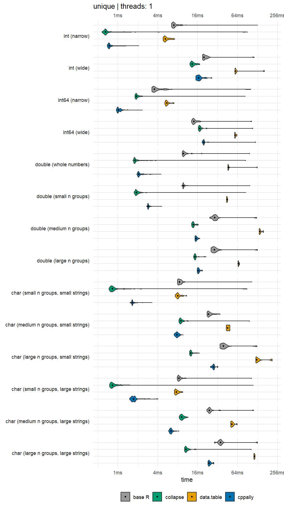
compare(benchmark_data, unique_sorted_fns, threads = 1L) |>
plot_benchmarks("unique + sort")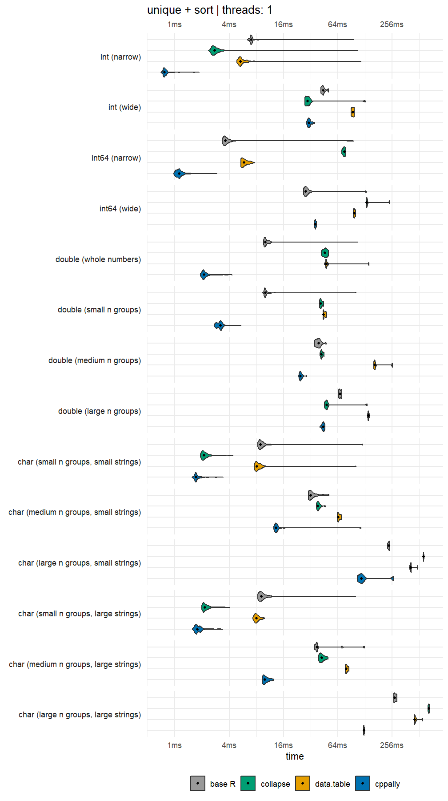
Matching
template <typename T>
requires (any<T, r_int, r_int64, r_dbl, r_str>)
[[cppally::register]]
r_vector<r_int> cpp_match(r_vector<T> x, r_vector<T> y){
return match(x, y);
}match functions
match_fns <- list(
`base R` = \(x, y) if (inherits(x, "integer64")){
bit64::match(x, y)
} else {
match(x, y)
},
collapse = \(x, y) collapse::fmatch(x, y),
cppally = cpp_match
)Build match data
set.seed(42)
match_data <- lapply(benchmark_data, \(x){
u <- sample(unique(x))
list(
hits = list(x = x, table = u),
small_table = list(x = x, table = x[1:100])
)
})cppally::match() returns 0-indexed matches, so we
subtract 1 from the base R results.
for (type in c("hits", "small_table")){
check_identical(
match_data,
\(d) cpp_match(d[[type]]$x, d[[type]]$table),
\(d) match_fns$`base R`(d[[type]]$x, d[[type]]$table) - 1L
)
}match() benchmarks
compare(
match_data,
lapply(match_fns, \(f) \(d) f(d$hits$x, d$hits$table)),
threads = 1L
) |>
plot_benchmarks("match (many hits)")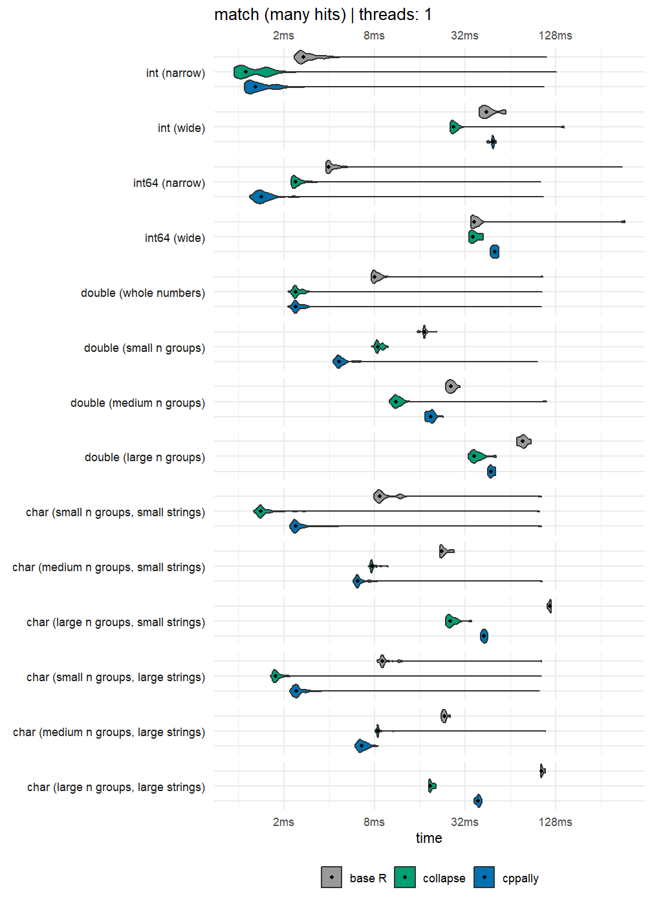
compare(
match_data,
lapply(match_fns, \(f) \(d) f(d$small_table$x, d$small_table$table)),
threads = 1L
) |>
plot_benchmarks("match (small table)")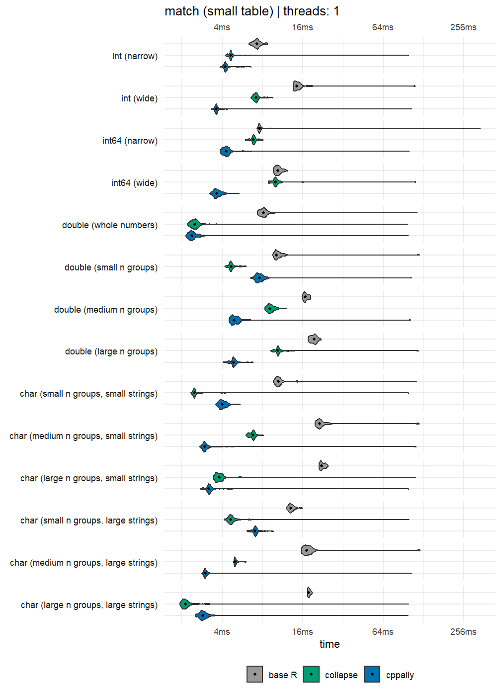
Sampling
[[cppally::register]]
r_vector<r_int> cpp_sample_int_with_replacement(int n, int size){
r_vector<r_int> out(size);
random_stream r; // Setup random_stream - it respects `base::set.seed()` so it is reproducible from an R seed
for (int i = 0; i < size; ++i){
out.set(i, r.index(1, n));
}
return out;
}random_stream offers index(),
uniform(), normal(), and many other
machine-agnostic random number generators. “Machine-agnostic” means that
results are identical and reproducible across different machines.
Results generated from random_stream will be different
to base R but are always reproducible by setting an R seed because
random_stream uses R’s seed on construction.
sampling_fns <- list(
`base R` = \(n) sample.int(n, n, replace = TRUE),
cppally = \(n) cpp_sample_int_with_replacement(n, n)
)
sampling_sizes <- 10^(1:floor(log10(n)))
names(sampling_sizes) <- paste("Sample size:", format(sampling_sizes, scientific = FALSE, trim = TRUE))
sampling_sizes <- as.list(sampling_sizes)
compare(sampling_sizes, sampling_fns, threads = 1L) |>
plot_benchmarks("sample.int(n, n, replace = TRUE)")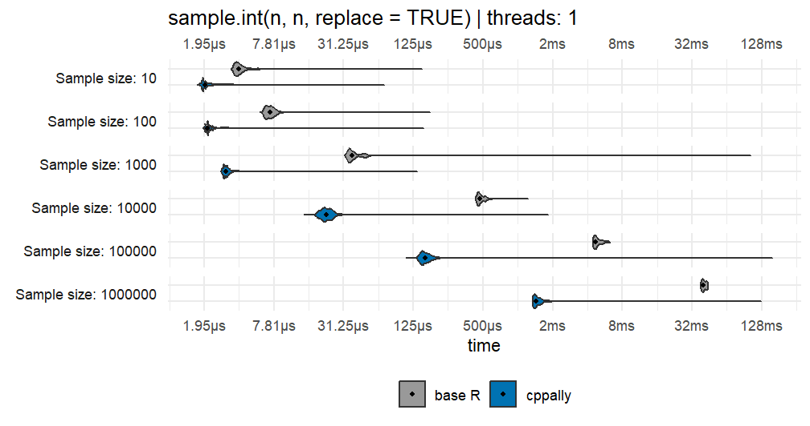
Distributions
[[cppally::register]]
r_vector<r_dbl> cpp_unif(int n, double lo, double hi){
r_vector<r_dbl> out(n);
random_stream r; // Setup random_stream - it respects `base::set.seed()` so it is reproducible from an R seed
for (int i = 0; i < n; ++i){
out.set(i, r.uniform(lo, hi));
}
return out;
}
[[cppally::register]]
r_vector<r_dbl> cpp_exponential(int n){
r_vector<r_dbl> out(n);
random_stream r;
for (int i = 0; i < n; ++i){
out.set(i, r.exponential());
}
return out;
}
[[cppally::register]]
r_vector<r_dbl> cpp_normal(int n){
r_vector<r_dbl> out(n);
random_stream r;
for (int i = 0; i < n; ++i){
out.set(i, r.normal());
}
return out;
}
[[cppally::register]]
r_vector<r_int64> cpp_binomial(int n, int size, double prob){
r_vector<r_int64> out(n);
random_stream r;
for (int i = 0; i < n; ++i){
out.set(i, r.binomial(size, prob));
}
return out;
}
[[cppally::register]]
r_vector<r_dbl> cpp_gamma(int n, double shape){
r_vector<r_dbl> out(n);
random_stream r;
for (int i = 0; i < n; ++i){
out.set(i, r.gamma(shape));
}
return out;
}
[[cppally::register]]
r_vector<r_int64> cpp_poisson(int n, double lambda){
r_vector<r_int64> out(n);
random_stream r;
for (int i = 0; i < n; ++i){
out.set(i, r.poisson(lambda));
}
return out;
}
[[cppally::register]]
r_vector<r_dbl> cpp_lognormal(int n){
r_vector<r_dbl> out(n);
random_stream r;
for (int i = 0; i < n; ++i){
out.set(i, r.lognormal());
}
return out;
}
[[cppally::register]]
r_vector<r_dbl> cpp_beta(int n, double shape1, double shape2){
r_vector<r_dbl> out(n);
random_stream r;
for (int i = 0; i < n; ++i){
out.set(i, r.beta(shape1, shape2));
}
return out;
}
distribution_fns <- list(
unif = list(
`base R` = \(n) runif(n),
cppally = \(n) cpp_unif(n, 0, 1)
),
exp = list(
`base R` = \(n) rexp(n),
cppally = \(n) cpp_exponential(n)
),
norm = list(
`base R` = \(n) rnorm(n),
cppally = \(n) cpp_normal(n)
),
binom = list(
`base R` = \(n) rbinom(n, 100, 0.3),
cppally = \(n) cpp_binomial(n, 100, 0.3)
),
gamma = list(
`base R` = \(n) rgamma(n, 2),
cppally = \(n) cpp_gamma(n, 2)
),
pois = list(
`base R` = \(n) rpois(n, 10),
cppally = \(n) cpp_poisson(n, 10)
),
lnorm = list(
`base R` = \(n) rlnorm(n),
cppally = \(n) cpp_lognormal(n)
),
beta = list(
`base R` = \(n) rbeta(n, 2, 3),
cppally = \(n) cpp_beta(n, 2, 3)
)
)
multi_compare(list(n = n), distribution_fns, threads = 1L) |>
plot_benchmarks("Random deviates")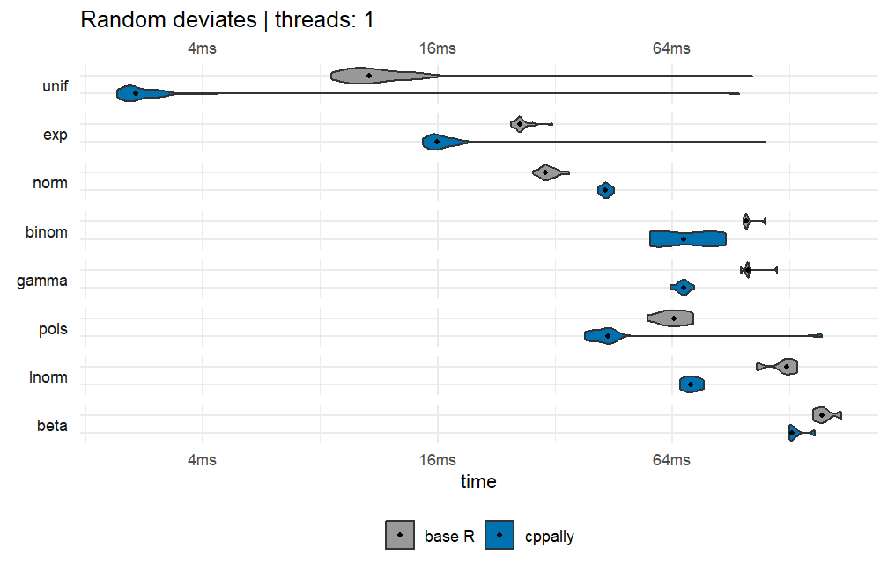
Group IDs
template <RVector T>
[[cppally::register]]
r_vector<r_int> cpp_group_id(T x, bool ordered){
return make_groups(x, ordered).ids;
}make_groups() creates a C++ class groups,
which holds group IDs of the data, the number of unique groups, and
other useful group metadata. Unordered IDs assign group IDs by
order-of-first-appearance, while ordered group IDs assign them in sorted
order. We compare unordered group IDs against
collapse::group() and ordered group IDs against
collapse::GRP().
Unordered group ID correctness check
check_identical(
benchmark_data,
\(x) cpp_group_id(x, ordered = FALSE) + 1L,
\(x) as.integer(collapse::group(x))
)Unordered group IDs
compare(
benchmark_data,
list(
collapse = \(x) collapse::group(x),
cppally = \(x) cpp_group_id(x, ordered = FALSE)
),
threads = 1L
) |>
plot_benchmarks("Unordered group IDs")
Ordered group ID correctness check
check_identical(
benchmark_data,
\(x) cpp_group_id(x, ordered = TRUE) + 1L,
\(x) as.integer(collapse::GRP(x, sort = TRUE)$group.id)
)Ordered group IDs
compare(
benchmark_data,
list(
collapse = \(x) collapse::GRP(x, sort = TRUE, return.order = FALSE, return.groups = FALSE)$group.id,
cppally = \(x) cpp_group_id(x, ordered = TRUE)
),
threads = 1L
) |>
plot_benchmarks("Ordered group IDs")
Statistical summaries
template <RNumber T>
[[cppally::register]]
r_dbl cpp_sum(r_vector<T> x){
return as<r_dbl>(sum(x, /*na_rm = */ true));
}
template <RNumber T>
[[cppally::register]]
T cpp_min(r_vector<T> x){
return range(x, /*na_rm = */ true).get(0);
}
template <RNumber T>
[[cppally::register]]
r_dbl cpp_var(r_vector<T> x){
return var(x, /*na_rm = */ true);
}
template <RNumber T>
[[cppally::register]]
r_vector<r_dbl> cpp_quantile(r_vector<T> x, r_vector<r_dbl> probs){
return quantile(x, probs, /*na_rm = */ true, /*names = */ false);
}We compare against the ‘collapse’ equivalents fsum(),
fmin(), fvar() and
fquantile().
set.seed(42)
stat_data <- list(
integer = sample.int(100, n, replace = TRUE),
double = rnorm(n)
)
probs <- seq(0.1, 0.9, 0.1)
stat_fns <- list(
sum = list(
collapse = \(x) collapse::fsum(x, na.rm = TRUE),
cppally = cpp_sum
),
min = list(
collapse = \(x) collapse::fmin(x, na.rm = TRUE),
cppally = cpp_min
),
variance = list(
collapse = \(x) collapse::fvar(x, na.rm = TRUE),
cppally = cpp_var
),
median = list(
collapse = \(x) collapse::fquantile(x, 0.5, na.rm = TRUE, names = FALSE),
cppally = \(x) cpp_quantile(x, 0.5)
),
quantiles = list(
collapse = \(x) collapse::fquantile(x, probs, na.rm = TRUE, names = FALSE),
cppally = \(x) cpp_quantile(x, probs)
)
)
multi_compare(stat_data, stat_fns, check = TRUE) |>
plot_benchmarks("Stats")

Grouped statistical summaries
[[cppally::register]]
r_vector<r_dbl> grouped_sum(r_vector<r_dbl> x, r_vector<r_int> g){
groups grps = make_groups(g, /*ordered = */ true);
return apply_by_group(x, grps, [](const r_vector<r_dbl>& chunk){
return sum(chunk, /*na_rm = */ true);
});
}
[[cppally::register]]
r_vector<r_dbl> grouped_min(r_vector<r_dbl> x, r_vector<r_int> g){
groups grps = make_groups(g, /*ordered = */ true);
return apply_by_group(x, grps, [](const r_vector<r_dbl>& chunk){
return range(chunk, /*na_rm = */ true).get(0);
});
}
[[cppally::register]]
r_vector<r_dbl> grouped_var(r_vector<r_dbl> x, r_vector<r_int> g){
groups grps = make_groups(g, /*ordered = */ true);
return apply_by_group(x, grps, [](const r_vector<r_dbl>& chunk){
return var(chunk, /*na_rm = */ true);
});
}
[[cppally::register]]
r_vector<r_dbl> grouped_quantile(r_vector<r_dbl> x, r_vector<r_int> g, double prob){
groups grps = make_groups(g, /*ordered = */ true);
return apply_by_group(x, grps, [prob](const r_vector<r_dbl>& chunk){
return quantile(chunk, prob, /*na_rm = */ true);
});
}Here each benchmark takes a vector x and a vector of
groups g. It then returns one result per group, in sorted
group order. Therefore the time it takes to build the groups into a
format each distinct library can handle is part of the benchmark.
- ‘collapse’ uses
fsum(),fmin(),fvar()andfmedian() - ‘data.table’ uses
[withkeyby, where sum, min, variance and median are all optimised internally (via GForce) - cppally uses
apply_by_group()as shown above
Note: apply_by_group() is a generic
functional that accepts any C++ function (lambda). This means that it is
expected to be slower than a hand-written optimised
method. If it can achieve speeds that are similar in magnitude to the
hand-written ones, then that is more than good enough given that it is
meant to be generic.
set.seed(42)
group_ids <- list(
`100 groups` = sample.int(100, n, replace = TRUE),
`10k groups` = sample.int(1e04, n, replace = TRUE),
`100k groups` = sample.int(1e05, n, replace = TRUE)
)
grouped_data <- lapply(group_ids, \(g) data.table(x = stat_data$double, g = g))
rm(group_ids)
invisible(gc())
grouped_fns <- list(
sum = list(
collapse = \(d) collapse::fsum(d$x, d$g, na.rm = TRUE, use.g.names = FALSE),
data.table = \(d) d[, .(stat = sum(x, na.rm = TRUE)), keyby = g]$stat,
cppally = \(d) grouped_sum(d$x, d$g)
),
min = list(
collapse = \(d) collapse::fmin(d$x, d$g, na.rm = TRUE, use.g.names = FALSE),
data.table = \(d) d[, .(stat = min(x, na.rm = TRUE)), keyby = g]$stat,
cppally = \(d) grouped_min(d$x, d$g)
),
variance = list(
collapse = \(d) collapse::fvar(d$x, d$g, na.rm = TRUE, use.g.names = FALSE),
data.table = \(d) d[, .(stat = var(x, na.rm = TRUE)), keyby = g]$stat,
cppally = \(d) grouped_var(d$x, d$g)
),
median = list(
collapse = \(d) collapse::fmedian(d$x, d$g, na.rm = TRUE, use.g.names = FALSE),
data.table = \(d) d[, .(stat = median(x, na.rm = TRUE)), keyby = g]$stat,
cppally = \(d) grouped_quantile(d$x, d$g, 0.5)
)
)
multi_compare(grouped_data, grouped_fns, check = TRUE, threads = 1L) |>
plot_benchmarks("Grouped stats")
cppally also offers reduce_by_group() which allows us to
apply a binary reduction by group. It is more efficient than
apply_by_group() for this specific use-case because it
avoids a lot of intermediate work that apply_by_group() has
to do.
Let’s redo the benchmark for the grouped sum, but this time using
reduce_by_group().
[[cppally::register]]
r_vector<r_dbl> reduce_based_grouped_sum(r_vector<r_dbl> x, r_vector<r_int> g){
groups grps = make_groups(g, /*ordered = */ true);
return reduce_by_group(x, grps, std::plus<>{}, /*init = */ r_dbl(0));
}
fast_grouped_sum <- list(
sum = list(
collapse = \(d) collapse::fsum(d$x, d$g, na.rm = TRUE, use.g.names = FALSE),
data.table = \(d) d[, .(stat = sum(x, na.rm = TRUE)), keyby = g]$stat,
cppally = \(d) reduce_based_grouped_sum(d$x, d$g)
)
)
multi_compare(grouped_data, fast_grouped_sum, check = TRUE, threads = 1L) |>
plot_benchmarks("Grouped sum")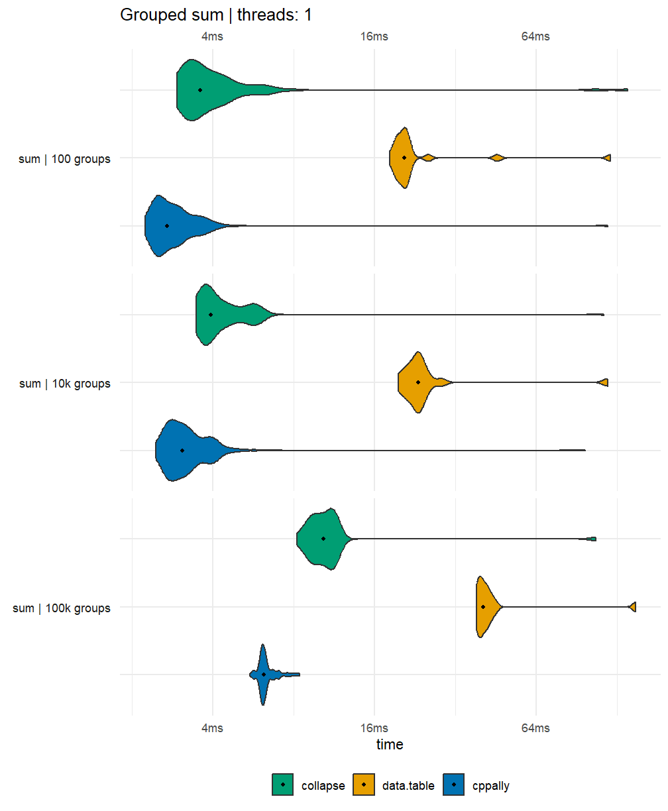
Dates
cppally’s r_date has members such as
year(), month() and iso_week(),
which we compare against the equivalent ‘lubridate’ and ‘data.table’
functions.
Note: All r_date members are thread-safe except
r_date::as_str().
Setting up dates data
n_dates <- 1e05
dates <- as.Date(0) + sample.int((366 * 100), n_dates, replace = TRUE)
dates <- sort(dates) # Most dates are usually in sorted order
int_dates <- data.table::as.IDate(dates)
date_data <- list(dates = list(dbl = dates, int = int_dates))
options(datatable.week = "sequential") # To give correct data.table::week() resultsGetting year/month/week/isoweek
[[cppally::register]]
r_vector<r_int> cpp_year(r_vector<r_date> x){
return pmap_parallel_simd([](r_date v){ return v.year(); }, x);
}
[[cppally::register]]
r_vector<r_int> cpp_month(r_vector<r_date> x){
return pmap_parallel_simd([](r_date v){ return v.month(); }, x);
}
[[cppally::register]]
r_vector<r_int> cpp_week(r_vector<r_date> x){
return pmap_parallel_simd([](r_date v){ return v.week(); }, x);
}
[[cppally::register]]
r_vector<r_int> cpp_iso_week(r_vector<r_date> x){
return pmap_parallel_simd([](r_date v){ return v.iso_week(); }, x);
}
date_fns <- list(
`year()` = list(
cppally = \(d) cpp_year(d$dbl),
data.table = \(d) data.table::year(d$int),
lubridate = \(d) lubridate::year(d$dbl)
),
`month()` = list(
cppally = \(d) cpp_month(d$dbl),
data.table = \(d) data.table::month(d$int),
lubridate = \(d) lubridate::month(d$dbl)
),
`week()` = list(
cppally = \(d) cpp_week(d$dbl),
data.table = \(d) data.table::week(d$int),
lubridate = \(d) lubridate::week(d$dbl)
),
`isoweek()` = list(
cppally = \(d) cpp_iso_week(d$dbl),
data.table = \(d) data.table::isoweek(d$int),
lubridate = \(d) lubridate::isoweek(d$dbl)
)
)Date field accessor benchmarks
multi_compare(date_data, date_fns, check = TRUE) |>
plot_benchmarks("Date field accessors")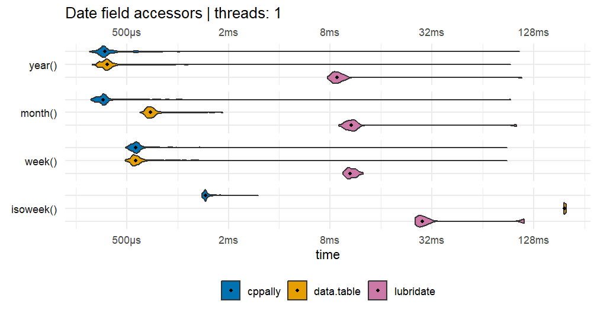
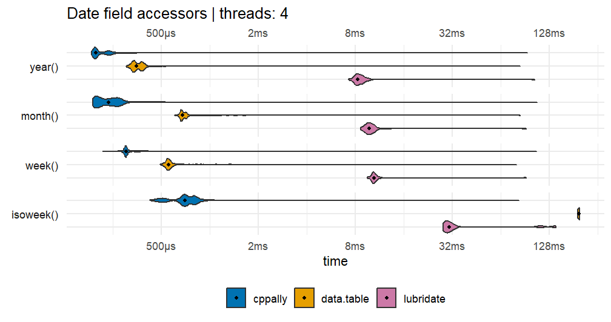
Date arithmetic
[[cppally::register]]
r_vector<r_date> cpp_add_months(r_vector<r_date> x, r_vector<r_int> n, int roll_choice){
// roll = 0 (none), 1 (backwards), 2 (forwards), 3 (away), 4 (nearest)
return pmap_parallel_simd([choice = roll_choice == 0 ? roll::none : roll::backward](r_date v, r_int n){
return v.add<"months">(n, choice);
}, x, n);
}
[[cppally::register]]
r_vector<r_date> cpp_add_days(r_vector<r_date> x, r_vector<r_int> n){
return pmap_parallel_simd([](r_date v, r_int n){ return v.add<"days">(n); }, x, n);
}
n_units <- sample.int(100, n_dates, replace = TRUE)
date_arithmetic_fns <- list(
`add days` = list(
cppally = \(d) cpp_add_days(d$dbl, n_units),
`base R` = \(d) d$dbl + n_units,
lubridate = \(d) d$dbl + lubridate::days(n_units)
),
`add months` = list(
cppally = \(d) cpp_add_months(d$dbl, n_units, 0L),
lubridate = \(d) d$dbl + months(n_units)
),
`add months (roll back)` = list(
cppally = \(d) cpp_add_months(d$dbl, n_units, 1L),
lubridate = \(d) lubridate::add_with_rollback(d$dbl, months(n_units))
)
)
multi_compare(date_data, date_arithmetic_fns, threads = 1L) |>
plot_benchmarks("Date arithmetic")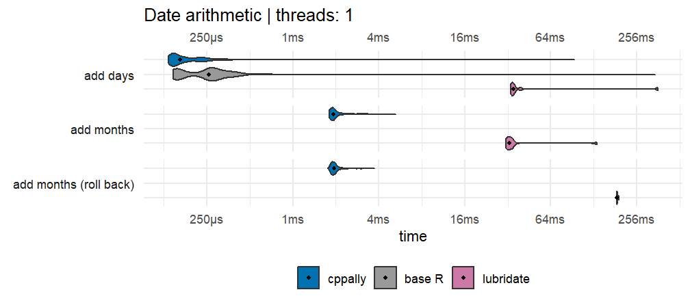
Date flooring
[[cppally::register]]
r_vector<r_date> cpp_floor_month(r_vector<r_date> x){
return pmap_parallel_simd([](r_date v){ return v.floor<"month">(); }, x);
}
[[cppally::register]]
r_vector<r_date> cpp_floor_week(r_vector<r_date> x){
return pmap_parallel_simd([](r_date v){ return v.floor<"week">(); }, x);
}
date_floor_fns <- list(
`floor to month start` = list(
cppally = \(d) cpp_floor_month(d$dbl),
data.table = \(d) round(d$int, "months"),
lubridate = \(d) lubridate::floor_date(d$dbl, "month")
),
`floor to week start` = list(
cppally = \(d) cpp_floor_week(d$dbl),
lubridate = \(d) lubridate::floor_date(d$dbl, "week", week_start = 7)
)
)
multi_compare(date_data, date_floor_fns, threads = 1L) |>
plot_benchmarks("Date flooring")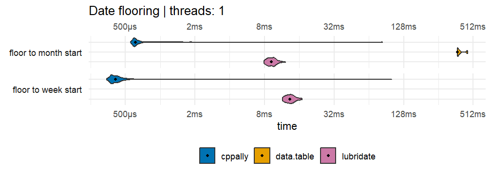
Time differences
[[cppally::register]]
r_vector<r_dbl> cpp_time_diff_days(r_vector<r_date> x, r_vector<r_date> y){
return pmap_parallel_simd([](r_date a, r_date b){ return time_diff<"days">(a, b); }, x, y);
}
[[cppally::register]]
r_vector<r_dbl> cpp_time_diff_weeks(r_vector<r_date> x, r_vector<r_date> y){
return pmap_parallel_simd([](r_date a, r_date b){ return time_diff<"weeks">(a, b); }, x, y);
}
[[cppally::register]]
r_vector<r_dbl> cpp_time_diff_months(r_vector<r_date> x, r_vector<r_date> y, int roll_choice){
return pmap_parallel_simd([roll_choice](r_date a, r_date b){
return time_diff<"months">(a, b, /*width = */ r_dbl(1.0), static_cast<roll>(roll_choice));
}, x, y);
}
set.seed(42)
time_diff_data <- list(
dates = list(
start = date_data$dates$dbl,
end = date_data$dates$dbl + sample.int(1000L, n_dates, replace = TRUE)
)
)
time_diff_fns <- list(
days = list(
cppally = \(d) cpp_time_diff_days(d$start, d$end),
`base R` = \(d) as.numeric(difftime(d$end, d$start, units = "days")),
lubridate = \(d) lubridate::interval(d$start, d$end) / lubridate::days(1)
),
weeks = list(
cppally = \(d) cpp_time_diff_weeks(d$start, d$end),
`base R` = \(d) as.numeric(difftime(d$end, d$start, units = "weeks")),
lubridate = \(d) lubridate::interval(d$start, d$end) / lubridate::weeks(1)
),
months = list(
cppally = \(d) cpp_time_diff_months(d$start, d$end, 2L),
lubridate = \(d) lubridate::time_length(lubridate::interval(d$start, d$end), "month")
)
)Correctness check
d <- time_diff_data$dates
stopifnot(
isTRUE(all.equal(time_diff_fns$days$cppally(d), time_diff_fns$days$lubridate(d))),
isTRUE(all.equal(time_diff_fns$weeks$cppally(d), time_diff_fns$weeks$lubridate(d))),
isTRUE(all.equal(time_diff_fns$months$cppally(d), time_diff_fns$months$lubridate(d)))
)
rm(d)
invisible(gc())
multi_compare(time_diff_data, time_diff_fns, check = TRUE, threads = 1L) |>
plot_benchmarks("Time differences")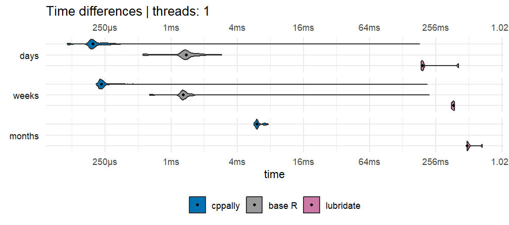
Session details
collapse::set_collapse(nthreads = old_collapse_threads)
data.table::setDTthreads(old_dt_threads)
set_cppally_threads(1L)
data.frame(
package = c("cppally", "data.table", "collapse", "bit64", "lubridate"),
version = vapply(
c("cppally", "data.table", "collapse", "bit64", "lubridate"),
\(pkg) as.character(packageVersion(pkg)), ""
)
) |>
knitr::kable(row.names = FALSE)| package | version |
|---|---|
| cppally | 1.1.0.9000 |
| data.table | 1.18.6.1 |
| collapse | 2.1.8 |
| bit64 | 4.8.6 |
| lubridate | 1.9.5 |
R.version.string
#> [1] "R version 4.6.0 (2026-04-24 ucrt)"